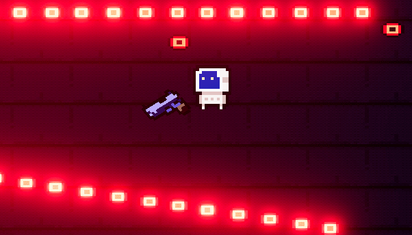

Bullet Hell
Abhi Alderman, Jason Dang, Juno Lee, Saif Moolji
Abstract
For our final project, we used the Godot 4 game engine to effectively create a 2.5D bullet-hell based game that focuses on many graphic techniques that we learned in CS 184. While the class mainly focused on 3D techniques, we wanted to create a unique experience by combining elements from the 2D pixel-art world into 3D rendering. Key features in our game include ray-casting for mouse aiming and enemy AI detection, a placeable thin lens mechanic that alters player projectile trajectories and damage (centered around concepts from class), and shaders to enhance visual effects. Starting from scratch in Godot’s game engine, drawing 2D sprites for our character models, navigating how to implement our 2D game in 3D were all tricky throughout our project, but ultimately, we wanted to explore and demonstrate the application of computer graphics concepts in both 2D and 3D.
Technical Approach
Raycasting
Although the pixel art and sprites in our game aim to replicate a 2D look, the actual game environment is in 3D (with translations and rotates in all X, Y, and Z directions). A key step in this illusion is the use of an isometric (not perspective) camera. In addition, we needed to solve several other interesting problems:
1. Player Mouse/Projectiles
One of our first problems solved was translating the player's mouse position on the 2D screen to a position in our 3D game environment. Using the camera's position* in the world and its field of view (game resolution), we can create a ray that represents all possible positions the player's mouse could be "hovering" over. Notably, most of our game's logic happens at the player's height of y=0.18. So the plane's normal vector is the unit-y vector, and it is centered at the player's global coordinate (an arbitrary point with y=0.18). The in-game position of the player's clicked mouse is thus the intersection of this plane with the mouse-ray. Naturally, the spawned projectile has a velocity in the direction of the difference of the mouse position and the player's position.
Note that the "camera position," or the origin of the ray, is not constant for any point on the screen. This is because we use an orthographic camera, which has a fixed "angle" of any ray but has a varying ray origin. In contrast, perspective cameras have a fixed origin but varying direction for camera rays.

|
2. Enemy AI
With enemies being a large part of a bullet-hell based game, we needed smart enemy behavior and detection. For the most part, we used Godot's navigation mapping to calculate the pathfinding between the player's position and where the enemy is allowed to move. Then, if the enemy detects a player within their area, we would have the enemy rotate smoothly by lerping the direction to the player. For shooting, we started off by having a single ray cast from the enemy's position to detect if the first object hit was the player and, if it was, the enemy AI would shoot at the player. However, we quickly realized that this wasn't our best method; often, the enemy would be too slow and trail the player for extensive periods of time instead of shooting at the player. So, we had the enemy perform evenly distributed raycasts within an angled cone (covering in front of and behind the player's direction).If any of the raycasts collided with the player, then the enemy would set its sight on the player and shoot more effectively.
|
|

|
Lenses
A primary mechanic in our game is the use of lenses (specifically the ideal thin lens we discussed in class), to aim the player's projectiles. By pressing SPACEBAR, the player can spawn in a lens at the cursor. Shooting through the lens redirects projectiles (according to Gauss' ray tracing diagram), in addition to increasing projectile damage.
|
|
To mimic the behavior of thin lenses, we began by drawing a Gaussian ray diagram. In addition to our lectures, we found resources online to calculate the angle of arbitrary rays passing through a thin lens.

|
Using similar triangles to relate the incoming and outgoing rays' angles to the horizontal:
|
|
This was the main equation we used for our lens mechanic. However, we needed significant extra work to translate this into our game's 3D environment. Even before we begin calculating ray angles, we first needed proper collisions for our lens. We decided on a thin box shape built into Godot (a true plane would be too thin for physics approximations, and its infinite distance would result in slower collision computations). However, since our box has finite depth, we first needed to project the point onto a the true plane of the lens. We define the lens plane with the lens' global coordinates (defined as the frontmost and center point of our box):
|
|
|
|
We then define a ray using the projectile's current position and velocity. Through the ray-plane intersection equation we learned in class, we find the point where the projectile passed through the plane (before it enters the box):
|
|
(We also check the denominator to discard collisions close to 90 degrees, for numerical stability as well as visual niceness).
To find the values we need for the incoming-outgoing angle formula, we find the distances between our intersection and the "center" of the lens plane. The horizontal (parallel or antiparallel to the plane's normal) is also defined as the cross product between the distance vector and the global "UP" vector.
To find the values we need for the incoming-outgoing angle formula, we find the distances between our intersection and the "center" of the lens plane. The horizontal (parallel or antiparallel to the plane's normal) is also defined as the cross product between the distance vector and the global "UP" vector.
We now have enough information to calculate the outgoing angle. Afterwards, we just rotate the projectile's velocity by the difference in the outgoing and incoming angle. However, we also need to account for the sidedness of the ray diagram. In the first diagram above, the ray intersects the plane above (or in our game, left of) the horizontal. If the projectile hits the right side of the lens, we need to rotate in the supplement of our answer instead (PI - delta_theta). We could have calculated this by using two collision boxes on the left and right sides of the lens. However, we realized that the "side" of the collision can be determined by checking whether the plane's normal and the horizontal are pointing in the same direction. We calculate this through a dot product.
Finally, we rotate the projectile's sprite to match its velocity, increase its damage, and change the color for a nice visual effect (we also created a function to map damage values to HSV colors for a perceptually intuitive way to see damage).
Here is the main code for our lens, for reference:
|
|
Shaders (e.g. teapot, enemies)
Our shaders were all coded in Godot's shading language.
Shaders are crucial for the optimization and the visual element of our game; at first, we thought to make our game visually appealing, we added a light source above every projectile, but we instantly ran into performance issues as the number of projectiles scaled. Instead, we achieved a similar visual effect as lighting, with glow and altering the color of the projectile texture in the per-fragment operations. However, our game was in 3D, but our sprites (projectiles, enemy & player design) were all in 2D (we didn't this challenge until implementing shaders because, for our sprites, we could use GoDot's billboarding feature to achieve the top-down look, which we do not have for shaders). To solve this problem, we had to do the following per-vertex operations:
We have the local up vector of the model and we take the cross product of this and the direction opposite of the camera to calculate the right vector of the billboard. The up vector will simply be the local up vector. The forward direction is calculated by taking the cross product of the negated view right vector and up vector. Then construct model-view matrix, multiplying view matrix with the billboard matrix. Some of the shaders we implemented:
|
|
|
Pixelated shader for boss:
|
|
|
|
|
We apply pixelated shader to our 3D teapot extracted from class; at every fragment operation, we have the original UV coordinates of each pixel on the screen, and we manipulate these coordinates to achieve a more pixelated look (based on our parameter pixel_size). We divide the screen coordinates by the pixel_size and put them into a pixelation block which effectively reduces the resolution of the texture sampling.
Screen wobble (on taking damage):
|

|
|
|
In the above code snippet, we make use of Godot's TIME built-in to translate the UV coordinates by a sine function. This also uses a common technique of passing information (the screen's texture, as captured by the camera) between "layers" of processing. The 3D camera node (parent) passes the screen to a CanvasLayer and ColorRect (which are its children).
Extra Stuff
Animations (lerp), Rotations in 3D, Bullet Patterns / Euler Method
World Environment: We used Godot’s WorldEnvironment node to configure several environment properties in our scene, allowing us to control lighting and background settings.
Items: We realized when testing our game, a large part of what makes a bullet-hell type game fun is the effects and items a player picks up during the game, we added sunglasses that boosted the player’s weapon speed and damage.
Particles: The base of most of our particles were 2D sprites. The problem is we have a 3D environment and we wanted to maintain a more pixelated look for our particles. To do so, we added a QuadMesh material into our 3D particles and a 2D sprite on top of this mesh, essentially having 2D. Adding particle effects like explosions and debris when shooting into a wall creates a sense of physicality in the environment.
Results
Deliverable Video
Here are some screenshots. Check our game's code, or download the latest release for yourself at https://github.com/draynr/final_project_cs184 !

|

|

|
References
[1] https://itch.io
[2] https://github.com/godot-jolt/godot-jolt
[3] https://docs.godotengine.org/en/stable/index.html
[4] https://www.youtube.com/watch?v=nAh_Kx5Zh5Q
[5] https://cs184.eecs.berkeley.edu/sp24
[6] https://physics.stackexchange.com/questions/690925/what-is-the-angle-of-a-ray-passing-through-a-thin-lens
Contributions
Abhi
Abhi worked on the game's level layout. He created the 3D tileset and made his own assets for game obstacles. Abhi was also responsible for creating and debugging enemy pathfinding and collisions. Abhi designed the gun sprite for our player weapon, and he created the dash ability and visual effect. Abhi was also the primary member who debugged the performance of our game, changing physics constants (and our engine to Jolt).
Jason
Jason worked on drawing the sprites for the player character and many of the enemies.. He added shaders (almost all of them) to many of the projectiles and sprites. Jason designed all of the base enemies' shooting and movement patterns. He added code for the bullet shooting patterns for the base enemies. He also worked on the navigation mesh for pathfinding and raycasting for enemy AI behavior.
Juno
Juno primarily worked on the lens feature, including deriving the necessary equations and math, and translating it into Godot script code. He also wrote the mouse-raycasting logic. Juno worked on features adjacent to the lens/player projectiles, including the lens shader, player projectile colors, and an item that changed the focal length of the lens. Juno also coded the bullet patterns for the teapot boss.
Saif
Saif added explosion particle effects for the enemy upon death and dash after-effects for the player sprite. He also added several other features that drastically improved the aesthetic appeal of our game, including a global bloom/glow effect. Saif spent time adjusting constants for several of the effects (e.g. volume, lighting intensity, shader constants) as well as tuning the balance of our game.